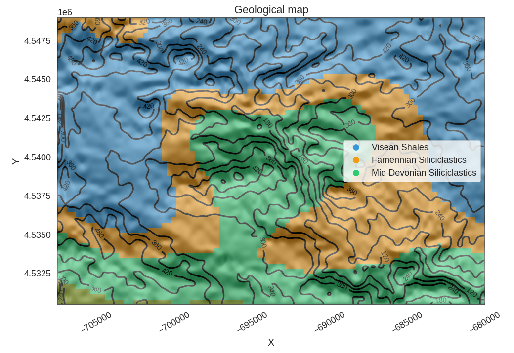
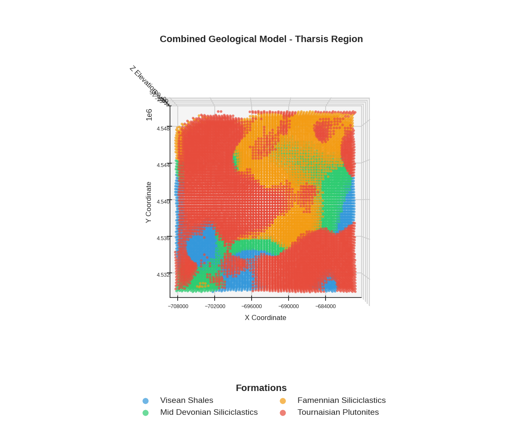
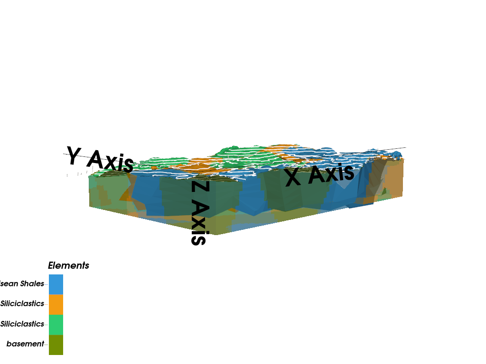

Note
Go to the end to download the full example code.
Complex Geological Model - Tharsis Region¶
This example creates a complex 3D geological model of the Tharsis region using GemPy, demonstrating how to model erosive contacts between igneous intrusions and sedimentary sequences.
Overview
Building on the simple model from Example 01, this example demonstrates a more sophisticated geological scenario where Tournaisian Plutonites intrude through a conformable Devonian sedimentary sequence. The key challenge is modeling the erosive contact between the intrusive body and the host rocks.
Geological Context
The stratigraphy from youngest to oldest:
Tournaisian Plutonites: Late Carboniferous intrusive body with erosive contacts
Visean Shales: Marine shales deposited during the Visean stage
Mid Devonian Siliciclastics: Clastic sediments from the Middle Devonian
Famennian Siliciclastics: Upper Devonian basement rocks
Technical Approach
This example demonstrates a two-model workflow:
First, a stratigraphic model is created for the conformable sedimentary sequence
Then, a separate model is created for the plutonite intrusion
Finally, the models are merged by overwriting the sedimentary lithologies where the plutonite exists
Why two models instead of one?
Standard implicit modeling (using a single scalar field) can sometimes struggle with erosive contacts and complex topological relationships. By using two separate models, we gain several advantages:
Implicit vs. Explicit Topology: Instead of relying on the interpolator to correctly handle the cutting relationship (implicit), we explicitly define it during the merge step. This ensures the plutonite always “wins” and cuts cleanly through the host rock.
Independent Constraints: The sedimentary layers are constrained by their own orientations and surface points, while the plutonite is constrained by its unique geometry. This prevents data from one domain from “bleeding” into and distorting the other.
Topological Robustness: It ensures that no “floating” stratigraphic layers appear inside the intrusive body, which can happen in single-model workflows if the interpolated surfaces cross in unphysical ways.
This approach allows each geological domain to be modeled with appropriate constraints while still producing a unified 3D model.
Note
The coordinate system uses UTM Zone 29N projection (EPSG:32629) with elevations in meters above sea level.
Import Libraries¶
We use GemPy for 3D implicit geological modeling and gempy_viewer for visualization.
The helper_plotter module provides custom visualization functions for combined models.
import numpy as np
import gempy as gp
import gempy_viewer as gpv
# Set random seed for reproducibility
np.random.seed(1234)
Setting Backend To: AvailableBackends.PYTORCH
Define Consistent Color Scheme¶
Consistent visualization is crucial when comparing multiple models and plots. We define a color dictionary that will be used across all visualizations to ensure that each geological unit always appears in the same color.
Color scheme rationale:
Red for Plutonites: Warm color representing igneous/intrusive rocks
Blue for Visean Shales: Cool color for marine sediments
Green for Mid Devonian: Intermediate color for older sediments
Orange for Famennian: Distinct color for basement rocks
Import Paths and Helper Modules¶
The paths module provides centralized access to data file locations.
The helper_plotter module contains custom visualization functions.
The example_parameters module contains shared configuration like color schemes.
from mineye.config import paths
from mineye.config.example_parameters import TharsisModelConfig
from mineye.GeoModel import helper_plotter
FORMATION_COLORS = TharsisModelConfig.TharsisDataProcessingConfig.FORMATION_COLORS
Define Model Extent and Resolution¶
Model Extent: The bounding box is tightly fit to the data coverage:
X range: 27.5 km (East-West direction)
Y range: 18.5 km (North-South direction)
Z range: 1.0 km (from -500m to +500m elevation)
Resolution: We use a regular 64×64×64 grid instead of octrees for this model. This is necessary because we need to merge two separate models, which requires compatible regular grids.
min_x = -707500
max_x = -680000
min_y = 4530500
max_y = 4549000
max_z = 500
model_depth = -500
extent = [min_x, max_x, min_y, max_y, model_depth, max_z]
# Use regular grid for model merging compatibility
resolution = [64, 64, 64]
refinement = 5
Load Structural Data Paths¶
For the complex model, we have separate data files for:
Sedimentary formations: Contact points and orientations for the Devonian sequence
Plutonite intrusion: Contact points and orientations for the Tournaisian intrusion
This separation allows independent quality control and adjustment of each dataset.
mod_or_sed_path = paths.get_orientations_path_sed_complex()
mod_pts_sed_path = paths.get_points_path_sed_complex()
mod_or_plut_path = paths.get_orientations_path_magmatic_complex()
mod_pts_plut_path = paths.get_points_path_magmatic_complex()
Create Stratigraphic Model¶
Step 1: Model the conformable sedimentary sequence
The sedimentary formations are modeled as a single stratigraphic series with conformable contacts. This means GemPy will interpolate smooth, parallel surfaces that honor the depositional geometry.
The stratigraphic order (youngest to oldest):
Visean Shales
Mid Devonian Siliciclastics
Famennian Siliciclastics (basement)
stratigraphic_geo_model = gp.create_geomodel(
project_name='stratigraphic_stack_model',
extent=extent,
refinement=refinement,
resolution=resolution,
importer_helper=gp.data.ImporterHelper(
path_to_orientations=mod_or_sed_path,
path_to_surface_points=mod_pts_sed_path,
)
)
# Apply consistent colors to stratigraphic surfaces
for element in stratigraphic_geo_model.structural_frame.structural_elements:
if element.name in FORMATION_COLORS:
element.color = FORMATION_COLORS[element.name]
Define Stratigraphic Stack¶
Stratigraphic series organize formations by their age relationships.
All formations in Strat_Series1 are conformable (parallel contacts).
gp.map_stack_to_surfaces(
gempy_model=stratigraphic_geo_model,
mapping_object={
"Strat_Series1": ("Visean Shales", "Mid Devonian Siliciclastics", "Famennian Siliciclastics")
}
)
Add Topography and Compute Stratigraphic Model¶
Topography integration ensures the model accurately represents surface geology. The DEM is cropped to match the model extent.
topography_path = paths.get_topography_path()
gp.set_topography_from_file(
grid=stratigraphic_geo_model.grid,
filepath=topography_path,
crop_to_extent=[
stratigraphic_geo_model.grid.extent[0],
stratigraphic_geo_model.grid.extent[2],
stratigraphic_geo_model.grid.extent[1],
stratigraphic_geo_model.grid.extent[3]
]
)
# Compute the stratigraphic model
gp.compute_model(stratigraphic_geo_model)
Active grids: GridTypes.DENSE|TOPOGRAPHY|NONE
Setting Backend To: AvailableBackends.PYTORCH
Using sequential processing for 3 surfaces
/home/leguark/.venv/2025/lib/python3.13/site-packages/torch/utils/_device.py:103: UserWarning: Using torch.cross without specifying the dim arg is deprecated.
Please either pass the dim explicitly or simply use torch.linalg.cross.
The default value of dim will change to agree with that of linalg.cross in a future release. (Triggered internally at /pytorch/aten/src/ATen/native/Cross.cpp:63.)
return func(*args, **kwargs)
Create Plutonite Model¶
Step 2: Model the intrusive body separately
The Tournaisian Plutonite has an erosive contact with the host rocks, meaning it cuts through the pre-existing stratigraphy. By modeling it separately, we can ensure the intrusion geometry is controlled by its own structural data without being influenced by the sedimentary contacts.
plutonite_id = 1
plutonite_geo_model = gp.create_geomodel(
project_name='plutonite_model',
extent=extent,
refinement=refinement,
resolution=resolution,
importer_helper=gp.data.ImporterHelper(
path_to_orientations=mod_or_plut_path,
path_to_surface_points=mod_pts_plut_path,
)
)
# Map the plutonite surface
gp.map_stack_to_surfaces(
gempy_model=plutonite_geo_model,
mapping_object={
"Plutonite_Series": ["Tournaisian Plutonites"]
}
)
# Apply consistent color
for element in plutonite_geo_model.structural_frame.structural_elements:
if element.name in FORMATION_COLORS:
element.color = FORMATION_COLORS[element.name]
# Compute the plutonite model
gp.compute_model(plutonite_geo_model)
Setting Backend To: AvailableBackends.PYTORCH
Using sequential processing for 1 surfaces
Merge Models¶
Step 3: Combine the stratigraphic and plutonite models
The merging process:
Extract the lithology blocks from both models (3D arrays of formation IDs)
Create a mask identifying voxels where the plutonite exists
Overwrite the stratigraphic lithologies with the plutonite ID where the mask is True
This approach implements the erosive contact - the plutonite “cuts through” the pre-existing sedimentary rocks.
# Get plutonite lithology block
plut_lith_block = plutonite_geo_model.solutions.raw_arrays.lith_block
plut_lith_block_reshaped = plut_lith_block.reshape(64, 64, 64)
plutonite_mask = plut_lith_block_reshaped == plutonite_id
# Get stratigraphic lithology block
lith_block = stratigraphic_geo_model.solutions.raw_arrays.lith_block
lith_block_reshaped = lith_block.reshape(64, 64, 64)
# Get voxel coordinates for plotting
voxel_coords = stratigraphic_geo_model.grid.regular_grid.values
# Insert plutonite into stratigraphic model (erosive contact)
lith_block_reshaped[plutonite_mask] = 6
lith_block_modified = lith_block_reshaped.flatten()
Visualize Combined Model¶
Final 3D visualization showing all geological units together. The plot respects topography by masking voxels above the surface.
Formation ID mapping for visualization:
ID 1: Visean Shales
ID 2: Mid Devonian Siliciclastics
ID 3: Famennian Siliciclastics
ID 6: Tournaisian Plutonites (merged from separate model)
FORMATION_ID_MAP = {
1: 'Visean Shales',
2: 'Mid Devonian Siliciclastics',
3: 'Famennian Siliciclastics',
6: 'Tournaisian Plutonites',
}
# Get topography points for masking (X, Y, Z)
topography_points = stratigraphic_geo_model.grid.topography.values
p = gpv.plot_2d(
stratigraphic_geo_model,
section_names=['topography'], # this triggers the top-down geological map
show_topography=True,
show_lith=True,
show_boundaries=True,
show_data=False
)
# Plot the combined model with topography masking
helper_plotter.plot_combined_model(
lith_block=lith_block_modified,
voxel_coords=voxel_coords,
formation_id_map=FORMATION_ID_MAP,
formation_colors=FORMATION_COLORS,
topography_points=topography_points,
title='Combined Geological Model - Tharsis Region'
)


/home/leguark/PycharmProjects/gempy_viewer/gempy_viewer/API/_plot_2d_sections_api.py:112: UserWarning: Section contacts not implemented yet. We need to pass scalar field for the sections grid
warnings.warn(
gpv.plot_3d(
model=stratigraphic_geo_model,
ve=5,
image=False,
kwargs_pyvista_bounds={
'show_xlabels': False,
'show_ylabels': False,
'show_zlabels': False
}
)

/home/leguark/PycharmProjects/gempy_viewer/gempy_viewer/modules/plot_3d/drawer_surfaces_3d.py:38: PyVistaDeprecationWarning:
../../../gempy_viewer/gempy_viewer/modules/plot_3d/drawer_surfaces_3d.py:38: Argument 'color' must be passed as a keyword argument to function 'BasePlotter.add_mesh'.
From version 0.50, passing this as a positional argument will result in a TypeError.
gempy_vista.surface_actors[element.name] = gempy_vista.p.add_mesh(
<gempy_viewer.modules.plot_3d.vista.GemPyToVista object at 0x7fed7c728590>
Summary and Next Steps¶
Key Takeaways:
Complex geological relationships can be modeled by combining multiple GemPy models
Erosive contacts are implemented by overwriting lithology values
Consistent color schemes are essential for comparing multiple visualizations
Topography masking provides geologically realistic surface views
Next Steps:
Example 03: Forward gravity modeling using this geological model
Example 04: Bayesian segmentation for lithological mapping
Probabilistic examples: Uncertainty quantification and joint inversion
sphinx_gallery_thumbnail_number = 1
Total running time of the script: (0 minutes 5.502 seconds)